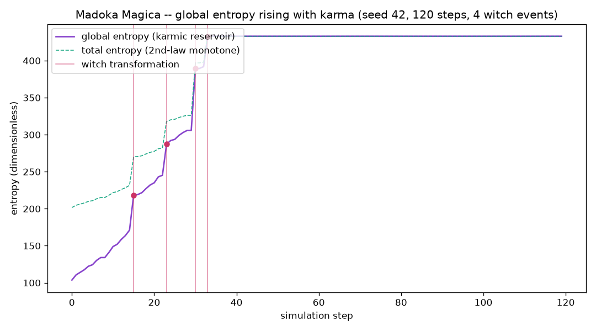

Madoka Entropy: a Python thermodynamics simulation
A closed system of magical girls, a global entropy budget, and the incubators who harvest the difference — ΔSₜₒₜₐₗ ≥ 0 verified across 60 seeds × 150 steps with zero violations.

The idea
Puella Magi Madoka Magica proposes that Kyubey harvests emotional energy to fight universal entropy. This package models that as a closed thermodynamic system: a wish of size x decreases local entropy by x but increases global entropy by k·x (with k = 1.8), so total entropy always increases. The Incubator (Kyubey) harvests a fraction of the surplus but does not change the total.
The second law of thermodynamics — ΔS ≥ 0 — is enforced as an invariant and verified exhaustively over 60 independent random seeds, each run for 150 simulation steps, with zero violations found.
Honest caveat: “entropy” here is a made-up scalar, not real thermodynamics. The karmic rule dS = (k−1)·x > 0 is chosen to always satisfy the second law — it is a consistency constraint, not a physical derivation.
Madoka entropy questions
What does entropy mean in Madoka Magica?
In the story, Kyubey says emotional energy from magical girls can counter the universe’s entropy. This project treats that premise as a fictional scalar model, not real thermodynamics.
How does the Madoka Entropy simulation test the second law?
Each simulated wish lowers local entropy but raises global entropy by a larger amount. Tests check that total entropy never decreases across 60 seeds and 150 steps per seed.
The mathematics
wish of size x: dS_local = -x (soul gem purified) dS_global = +k·x (k=1.8) (universe entropy grows) dS_total = (k-1)·x = 0.8·x > 0 ✓ (second law satisfied) Soul gem: purity decays each step; witch when purity ≤ 0.15 Witch burst = 12 + 1.5 × order_cast Incubator (Kyubey): harvest_fraction = 0.35 of surplus does NOT change dS_total (conservation) Default sim: seed=42, 120 steps, 5 girls All 5 become witches by step 33 Final total entropy: 432.994 Harvested: 81.548 Invariant verification: 60 seeds × 150 steps = 9,000 steps Second-law violations: 0
Figures & animations
Entropy over time
Total entropy rising monotonically (seed=42, 120 steps, 5 girls). Each girl’s contribution is stacked; witch events appear as vertical jumps.
Run it
git clone https://github.com/caelum0x/awesome-mad-projects.git cd madoka-entropy pip install -e . python -m madoka_entropy # default sim, seed=42 python -m madoka_entropy --seed 7 # alternate seed python -m pytest tests/ -v